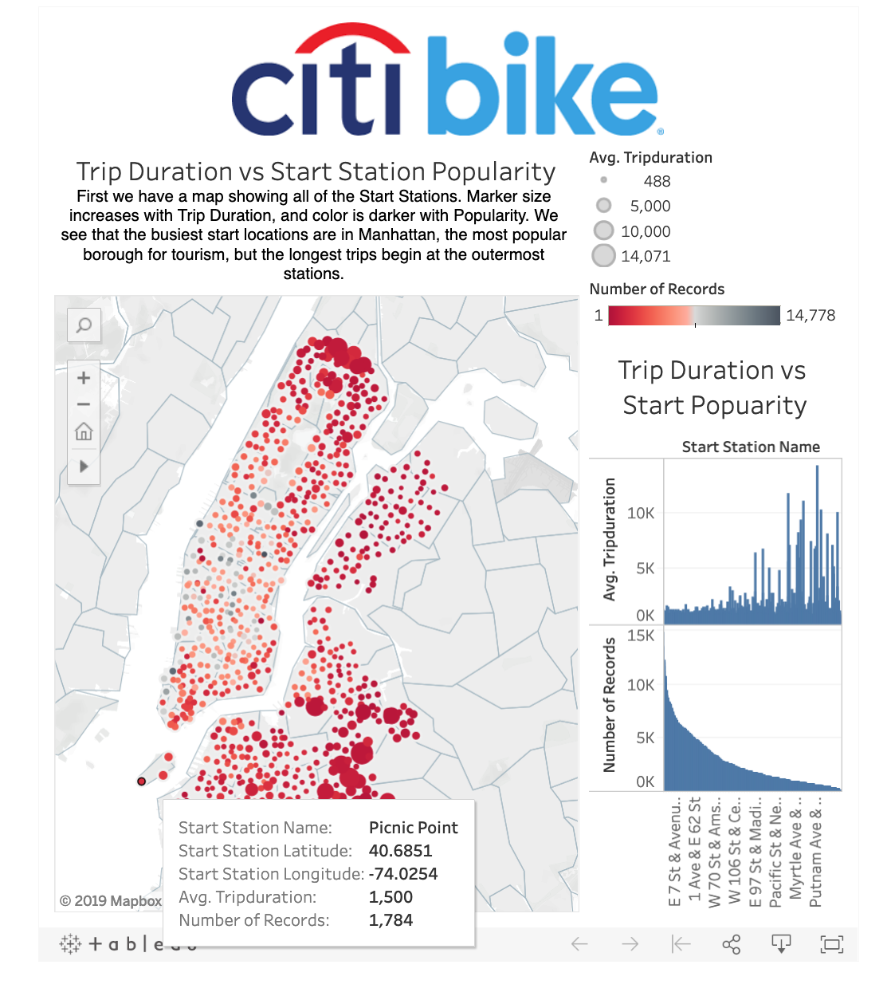
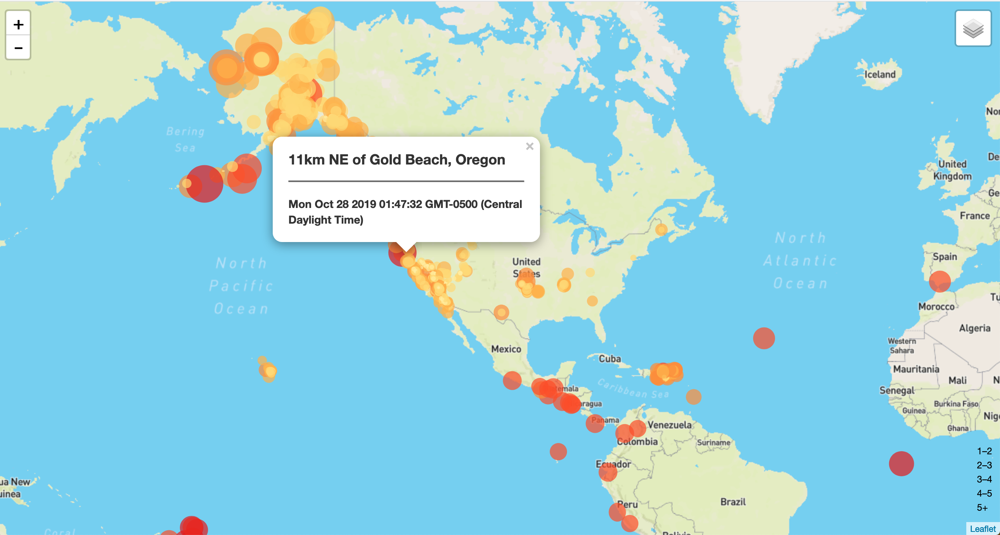
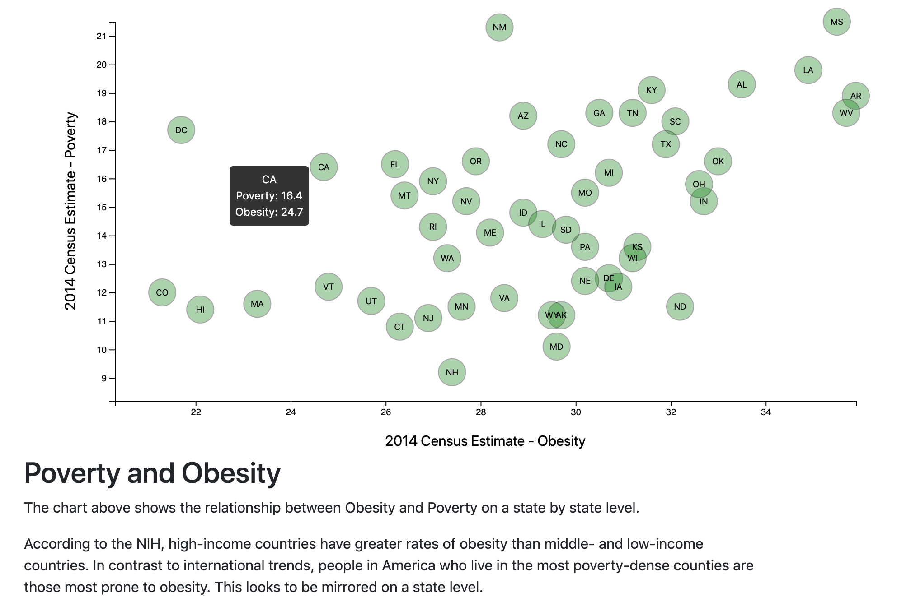
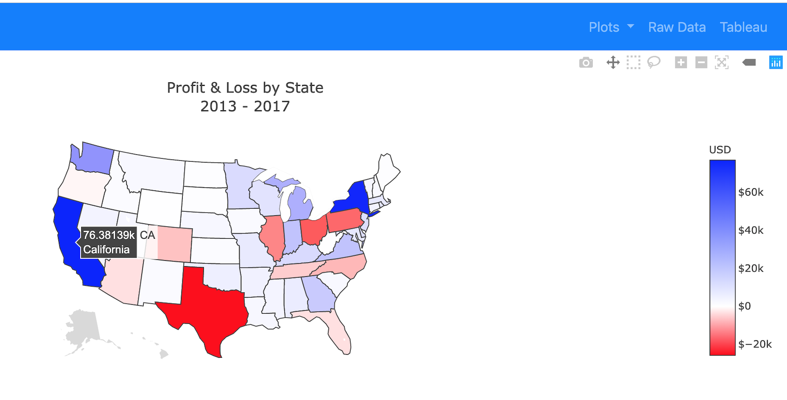

Data analyst with a background in Digital Asset Management and skills in Python, SQL, Excel, and JavaScript. Extensive experience creating searchable databases for cataloged master recordings in the entertainment industry. An excellent problem solver with meticulous attention to detail.
Manage all aspects of database creation, cataloging, and coordination of audio deliveries for record labels and independent artists. Perform metadata collection, quality control, and file verification of master recordings.
Created searchable databases by cataloging metadata from projects delivered by freelance producers and engineers. Responsible for all technical aspects of a facility specializing in broadcast, post-production, and music recording.
Began as an engineer, promoted to VP of Operations, supervised a staff of 10 engineers and facilities technicians. Trained staff engineers for session work, focusing on signal flow, command of non-linear recording/editing, session etiquette, studio documentation, and master delivery standards.
A Tableau visualization of Citi Bike data. Click image to see my public profile with complete story.
Screen Shot from an analysis of United States Geological Survey Earthquake Data. This is one week of reports, pulled from the API feed of real time GeoJSON data, built with D3.js and Leaflet.
Screen shot from a project comparing poverty to obesity on a state by state basis. SVG will conform to mobile devices, and the tooltip will display exact data points.
Choropleth map of Profit and Loss covering five years of sales data, from the Plotly graphing library. Data was pulled from a PostgreSQL database using SQLAlchemy. A Flask app was coded in Python to provide RESTful APIs who's routes are accessed in JavaScript, and are also used in our HTML to navigate between our home page, graphs, and raw data.
